1. General Overview
By default all BIA users will have access to BIASecurity. Within the app users will be able to:
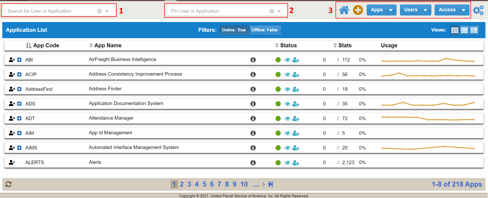
- View Apps
- View/Edit App Details
- Request App Access
- View Access List
- Approve/Deny Access Request
- Remove or Edit Extended Attributes of Existing Users
- Create New Apps and Users
- Edit User Profile
The driving force of BIASecurity are the 3 highlighted sections on the menu bar. The Search field (#1) will filter any list you are currently viewing by app or user. The Pin field will keep static any user or app search when switching between the 3 main views (Apps, Users, Access). By default the Pin field is set to a user’s ADID for a person with user access level. Only admin users will have the Pin search enabled. The buttons on the right side (#3) will switch the list view between Apps, Users and Access. This is also where users can create new Apps, Users or Access Request. Note, access request can additionally be made in other places within the app.
2 - Application List
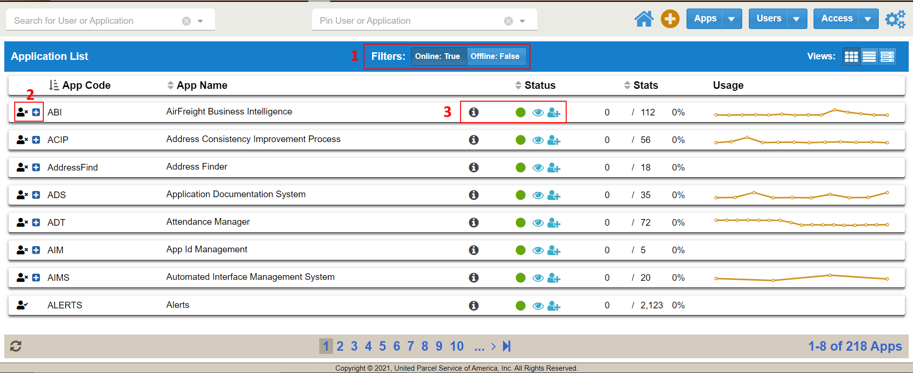
Users can sort the application list with the button groups (#1) to view Online, Offline or Online and Offline applications. Note, this button is not a toggle. Users must unclick to remove a certain criteria. To request access to an application click the button (#2) next to an app name. The person icon to the left of each app row will be marked by a checkmark (has access) or x (does not have access). Apps for which you have current access will also not display the blue request button (#2). Admin users will able to change the status of their app (#3) by clicking any of the 3 status buttons (Online, Visible & Able to Request Access).
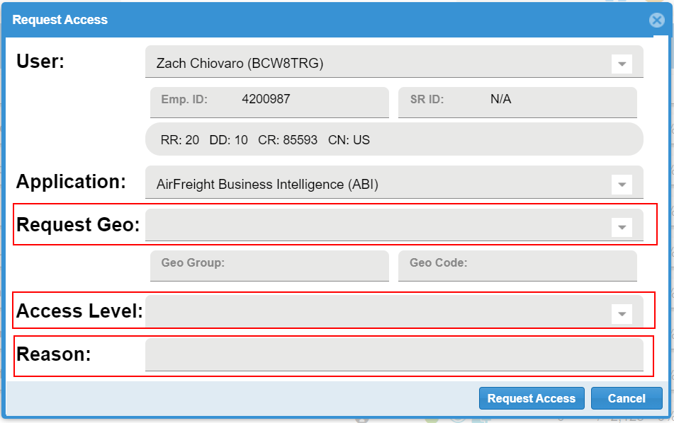
Clicking the request access will prompt a popup partially populated. Users will need to fill out Request Geo, Access Level and Reason. Both Request Geo and Access level can be utilized as combo drop down box or searchable text field. The app manager will receive a request email once the users hits the Request Access button.
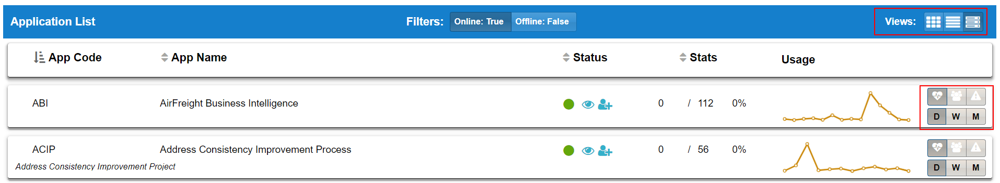
The Detail view of the apps list will display additional Usage graph options. Here you can view Hits, Errors and Logins sorted by Days, Weeks or Months.
Double clicking an app row will open additional information and tools. Here users can see an app Summary, Details, Access Geos and who has access.
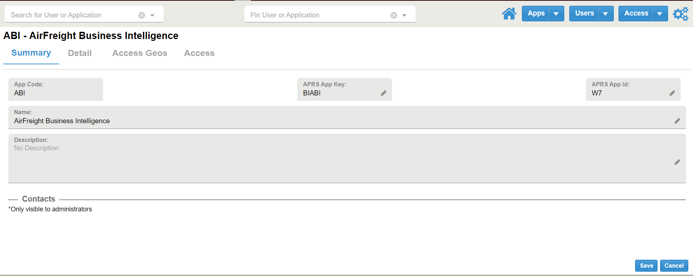
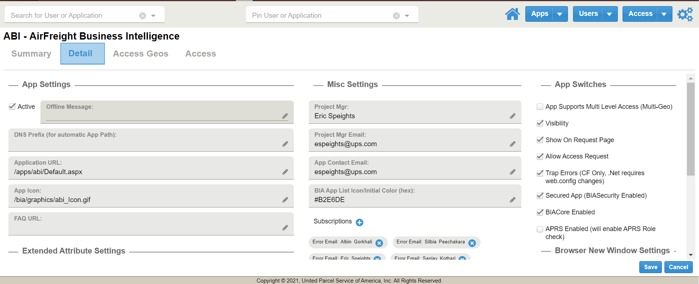
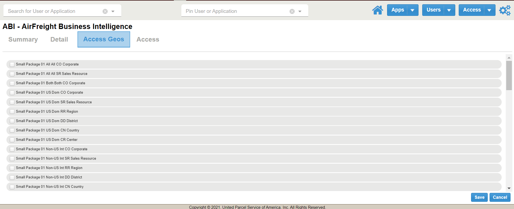
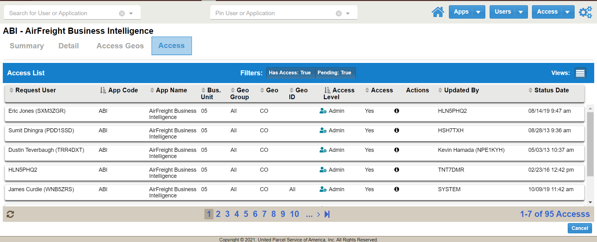
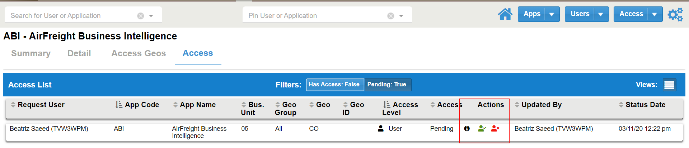
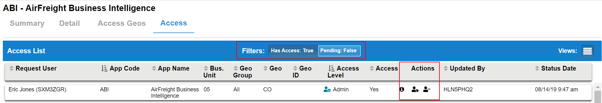
Admins under an app’s Access tab can filter between Has Access and Pending access, these buttons are not a toggle. In the Actions columns under the Pending filter admins will be able to Approve or Deny a request. Under the Has Access filter admins can edit Extended Attributes and remove user.
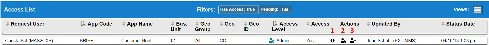
The info icon (#1) hover will display Request Reason and age of the request. The left user icon (#2) can be clicked to access Extended Attributes while the right user icon (#3) can be used to remove a user's access.
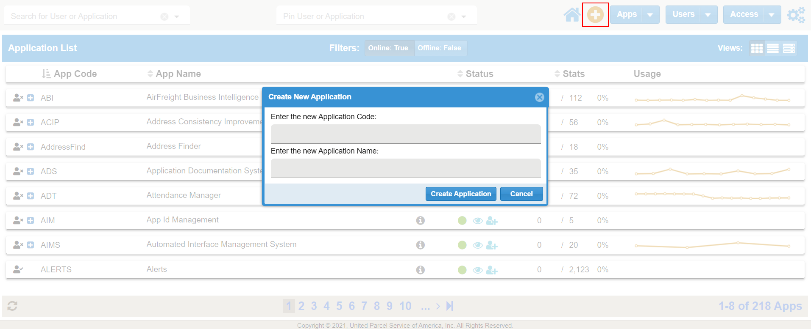
To create a New Application simply hit the + button while viewing the App List. A popup will ask for basic new app information. You can also click the Apps dropdown to prompt the new app popup too.
3 - User List
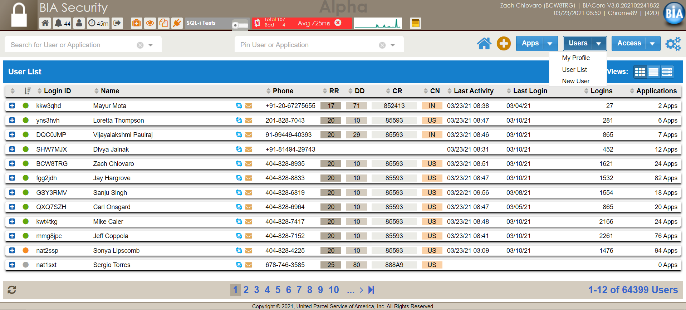
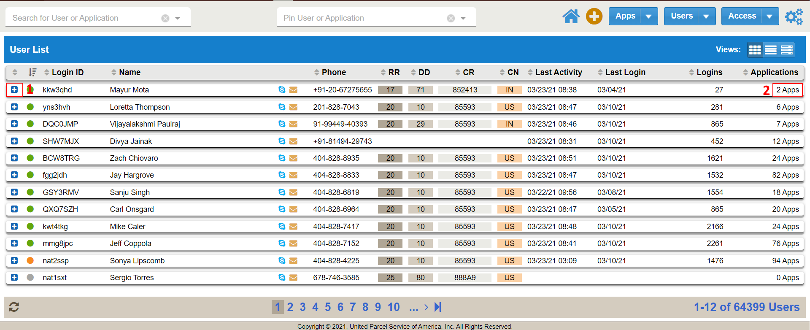
The User List will display all BIA user accounts. A user can request access to an app by clicking the + button on the left side (#1). Users can see how many apps they have access to by the number on the right (#2). Clicking that number will pop up a window showing all app accesses and levels.
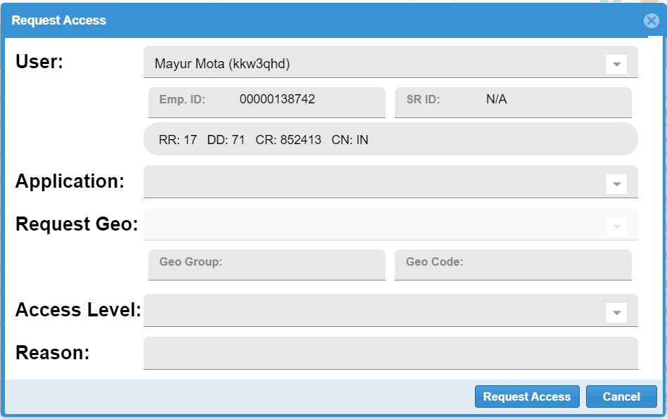
This access window will request users to fill out Application, Request Geo, Access Level and Reason. Again, these are both dropdown selections and type in search fields.
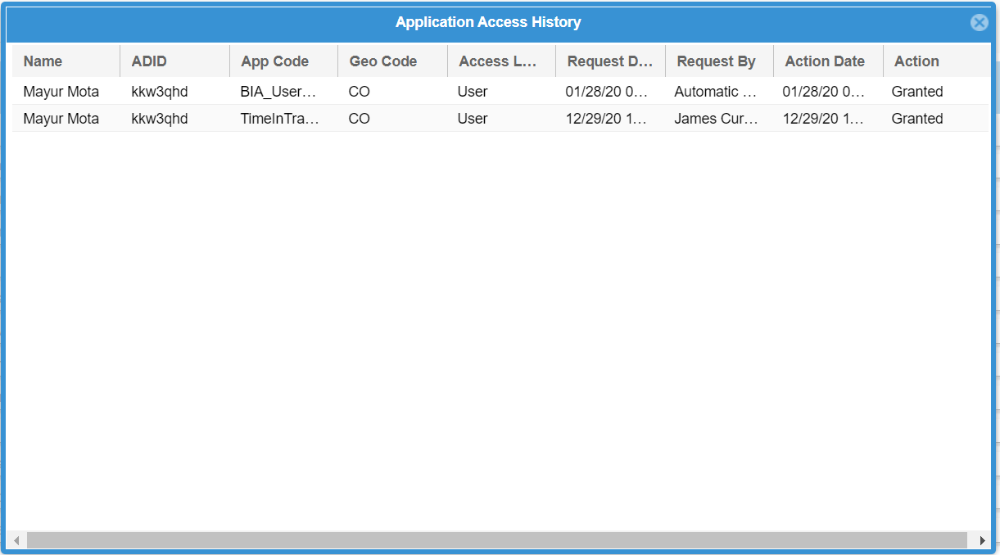
The all app access popup will display information such as App, Access Level, Request Date and Action (Granted, Denied or Modified).
Double clicking a user row will display additional user information such as Profile, Access and Delegates.
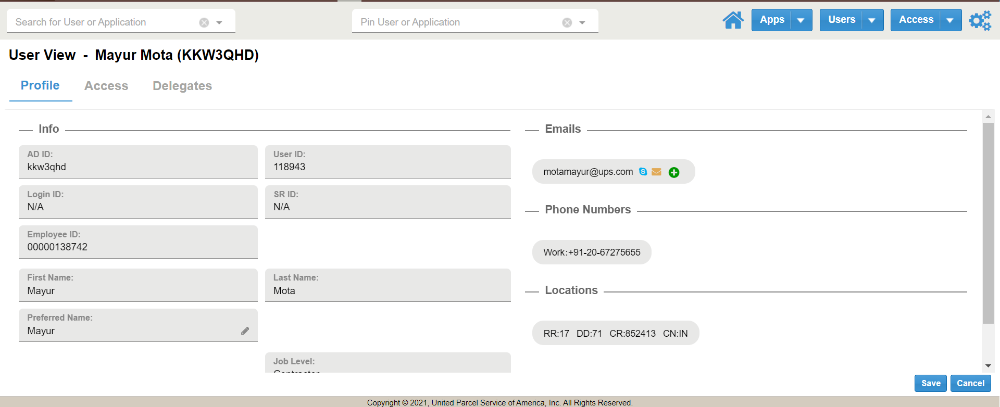
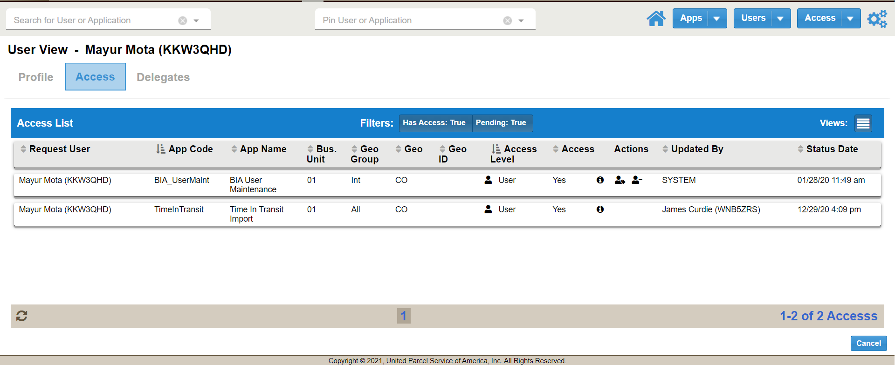
Here admins will be able to edit current access and approve or deny based on the filter.
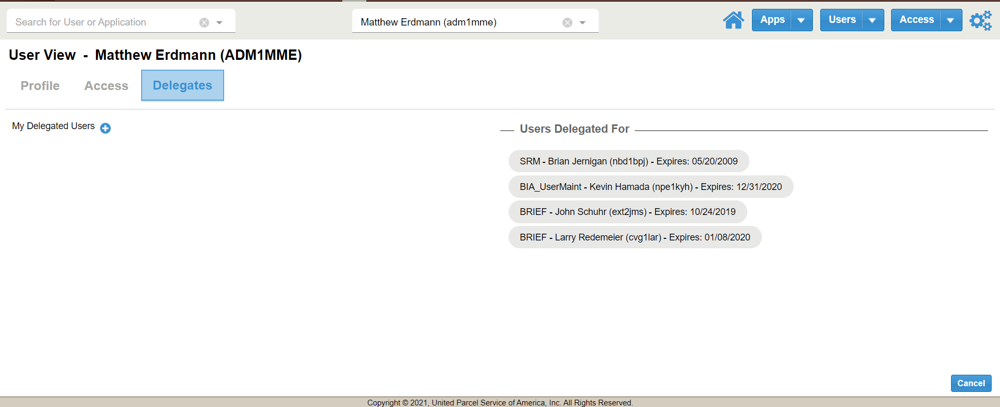
Users can create and view delegates created for their profile.
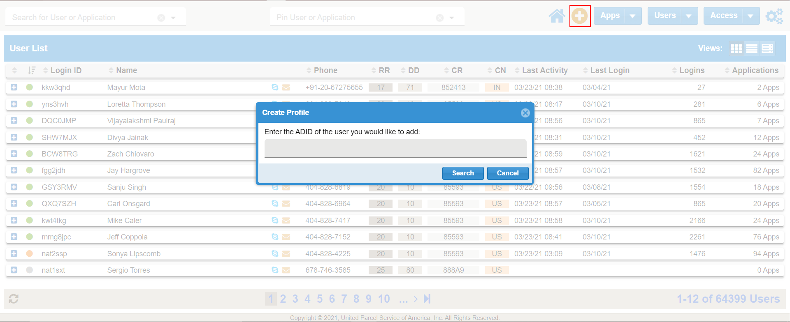
To add a new user simply hit the + button while viewing the User List or click New User on the main Users button dropdown.
4 - Access List
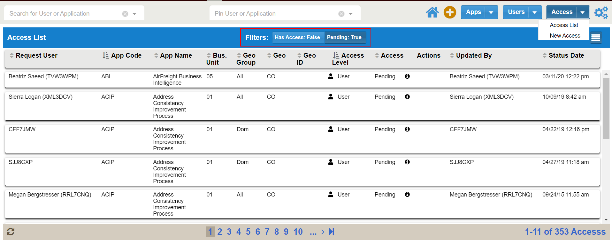
The Access List can be used to view all levels of access for every user within BIA. Admin users will able to take actions on request and edit or remove existing current access levels. The filter buttons for Has Access and Pending must be clicked on or off to change the Access list. Meaning you can have both buttons active to view both sorts, or unclick one to see just pending or current access.
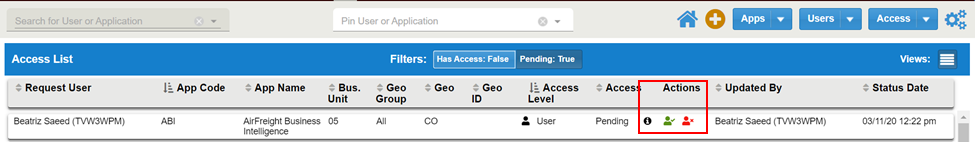
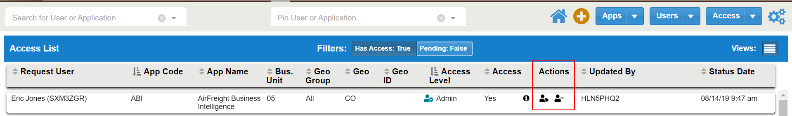
Under the Pending filter admins will be able to Approve or Deny pending request. The information button hover will show request reason and age of the request. Admins will also be able to remove or edit Extended Attributes under the Has Access filter.
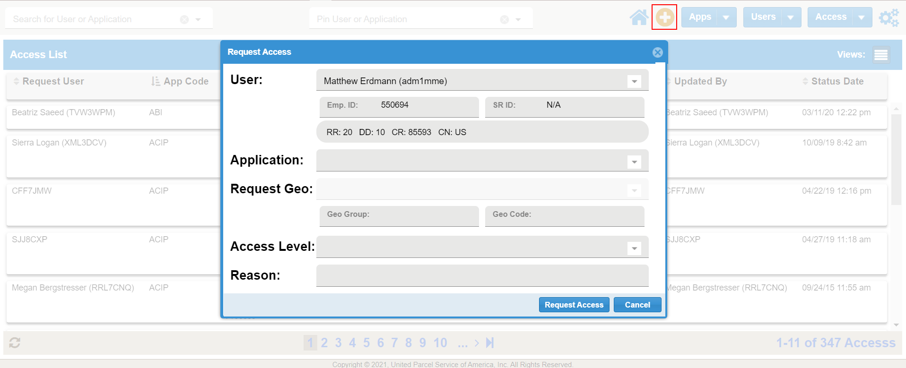
Press the + button while viewing the Access List to request new access. Users will need to fill out Application, Request Geo, Access Level and Reason. App Admin will get an approval request email upon submission.